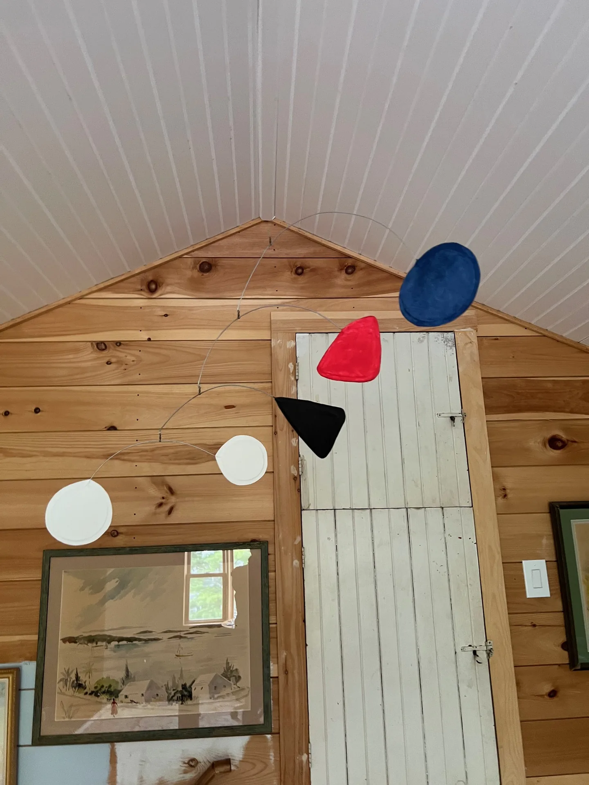

1 / 2
Simple MobilesFeatured
Primary Balance
A compact suspended composition of primary-colored discs and dark geometric forms, balanced to respond to small currents of air.
Contact for priceAvailability on request
Inquire